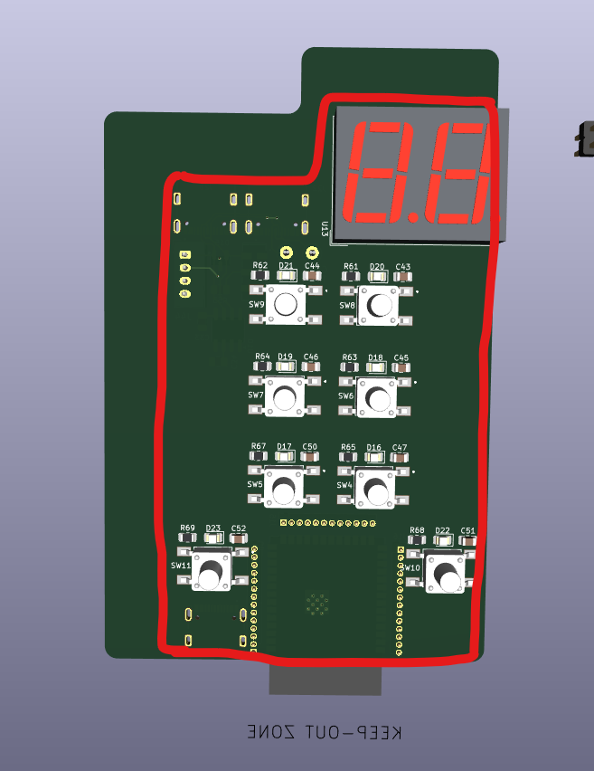

PCB Layout Session 2
I continued laying out the PCB. I completed the placement for the load-cell sheet, the buttons and LEDs, and the 3.3 V regulators.
The 7-segment-display net assignments still need to be changed to make routing cleaner.
I also began developing the PCB outline. The Nucleo reference board measures 70.00 × 82.50 mm.
To keep the new board outline as small as possible, I made the following changes:
- I replaced the DB9 connector with a JST-PH2.0 connector.
- I removed the barrel jack and its reverse-polarity-protection diode.
- I replaced the large
SLW-883935-2A-DCAN-termination switch. After considering the450404015514, I selected the smaller SMDJS202011JCQNswitch. - I replaced the
TL3301PF160QGESP32-S3 reset and flash buttons with the smallerCKN12220-1-NDbuttons.
The board still needed to be enlarged.

The image compares the original outline, shown in red, with the new outline. The initial 60 × 95 mm outline was increased to 60 × 100 mm.
I changed the jumper pin headers from through-hole to SMD components. This saves space and makes it easier to place components on both sides of the board without creating mechanical conflicts.